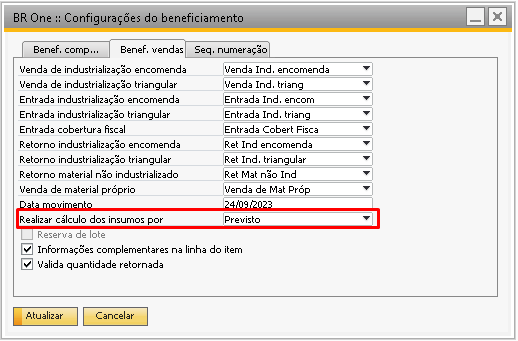
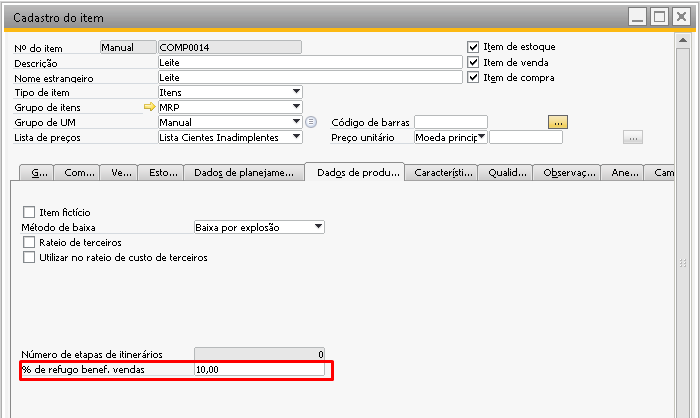
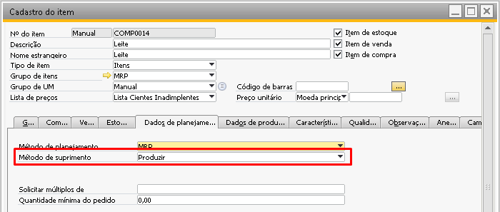
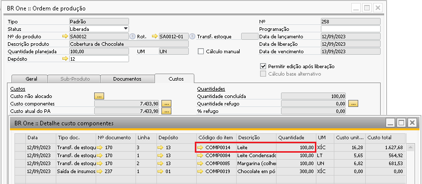
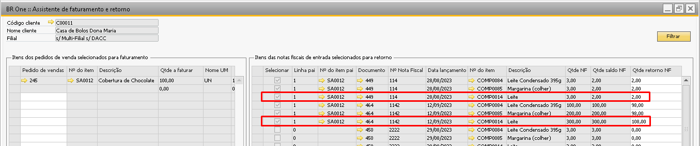
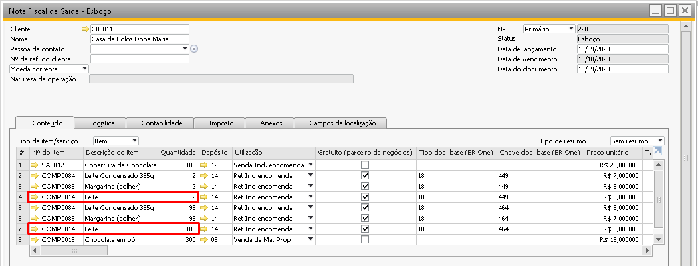

Cadastro do Item
Utilize o caminho abaixo para acessar a tela:
Estoque -> Cadastro do Item
Na tela de Cadastro do Item na aba Dados de Produção foi adicionado o campo % de refugo benef. vendas necessário para que o sistema identifique a quantidade a realizar de retorno do material do cliente considerando um percentual relacionado ao refugo previsto de produção.
Atenção: Esta configuração é válida apenas para quando o parâmetro Realizar cálculo dos insumos por das configurações de beneficiamento está definido como Previsto conforme a imagem abaixo:
Exemplo:
Se o campo % de refugo benef. vendas estiver configurado para 10% e o roteiro está configurado para uma saída de insumos de 100 peças, ao realizar a explosão do roteiro será considerado a quantidade de 100 + 10%, totalizando 110 peças de saída de insumos.
Na aba Dados de Planejamento, o produto acabado e semiacabado devem estar com metodo de suprimento configurados como Produzir.
Note abaixo que com ao configurar o componente Leite com 10% de refugo, ao realizar a entrada de PA este 10% não é considerado na transferência de estoques vinculada a entrada de PA.
Porém na etapa 2 do assistente de faturamento e retorno ao realizar o retorno da mercadoria para o cliente ao invés de retornar 100 vai retornar os 110.
 